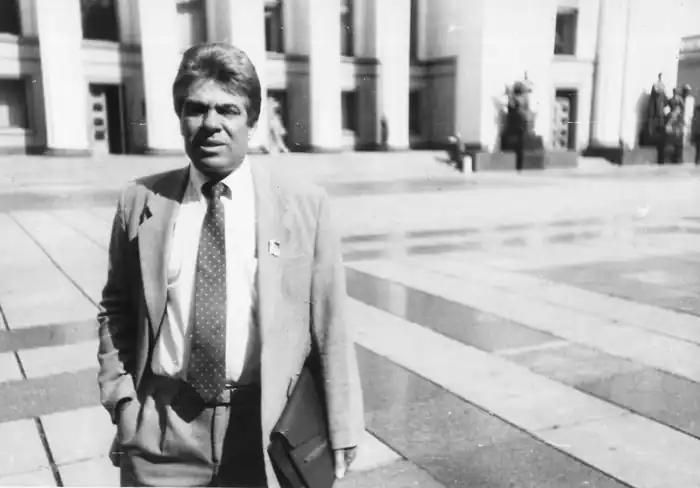
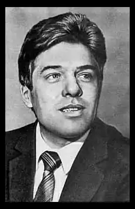
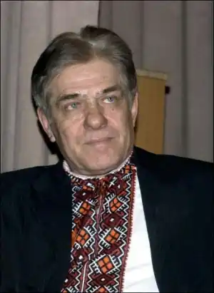

Погрібний Анатолій Григорович
(3 січня 1942 – 9 жовтня 2007)
Письменник, літературознавець, громадський діяч Народився 3 січня 1942 року у селі Мочалище Бобровицького району Чернігівської області. У 1959 році закінчив Харківський хіміко-механічний технікум. З серпня 1959 до жовтня 1961 — апаратник, старший апаратник заводу хімічних реактивів міста Шостка Сумської області. В лютому 1962 — липні 1964 працював вчителем історії та суспільствознавства у селі Піски Бобровицького району. Наступні два роки Анатолій Погрібний був студентом філологічного факультету Київський університет ім. Т.Шевченка. З травня 1966 до лютого 1969 року — літературний працівник, старший літпрацівник, завідувач відділу художньої літератури і мистецтва, газета "Друг читача". Після цього до липня 1970 року навчався в аспірантурі Київського університету ім. Т.Шевченка, захистив кандидатську дисертацію на тему "Ідейно-естетичні позиції Бориса Грінченка в літературно-критичній боротьбі кінця ХІХ — початку ХХ ст."). З серпня до грудня 1970 року — завідувач відділу критики газети "Літературна Україна". З грудня 1970 р. — старший викладач, з 1976 р. — доцент, з 1983 р. — професор факультету журналістики; у 1983 — 92 роках — завідувач кафедри історії літератури і журналістики Київського національного університету ім. Т.Шевченка. У 1981 році захистив докторську дисертацію на тему: "Проблема художнього конфлікту в теорії і практиці сучасної прози". Анатолій Погрібний був депутатом Київської міської ради народних депутатів, кандидатом на посаду Київського міського голови від демократичних сил (1990 — 1995). Член Національної ради Демократичної партії України (1992 — 1996). У 1992 — 1994 роках працював на посаді Першого заступника міністра освіти України. З 1994 року — Заступник Голови Національної спілки письменників України. З 1999 року — член Центральної ради Української республіканської партії "Собор". У 2003 році обраний Головою Київської міської організації Національної спілки письменників України. У 1998 році — кандидат в народні депутати України від виборчого блоку "Національний фронт", у 2006 році — від Блоку "Наша Україна". Член президії Національної ради Конгресу української інтелігенції, Голова Комісії з питань української мови (з лютого 1996 р.); член Ради з питань мовної політики при Президентові України (1998 — 2001). Член Української всесвітньої координаційної ради (з 1997 року). Академік Академії наук вищої школи України (з 1996), Академії оригінальних. ідей (1993), Української вільної академії наук (з 1999 року, США). Дійсний член Наукового Товариства імені Т.Шевченка (з 1998 року). Член Національної спілки письменників України (з 1984 року). Входив до організаційних комітетів-засновників: Народного Руху України, Товариства української мови ім. Т.Шевченка "Просвіта", Демократичної партії України, Конгресу української інтелігенції. Професор, декан факультету україністики Українського вільного університету (м. Мюнхен, Німеччина). Провідний науковий працівник Інституту українознавства МОН України. З 1989 року — член Центрального правління Всеукраїнського товариства "Просвіта" ім. Т.Шевченка. Заслужений працівник вищої школи України (1985). Орден "За заслуги" III ст. (1998). Державний службовець 1-го рангу (1994). Володів англійською, сербською і хорватською мовами. Автор понад тисячі статей та десятків монографій: "Художній конфлікт і розвиток сучасної прози" (1981), "Осягнення сутності" (1984), "Яків Щоголев" (1986), "Олесь Гончар" (1987), "Відповідальна перед епохою" (1987), "Борис Грінченко" (1988), "Борис Грінченко у літературному русі кінця XIX — початку ХХ ст." (1991), "Криниці, яким не зміліти" (1994), "Якби ми вчились так, як треба" (1999), "Розмови про наболіле" (2000), "Класики не зовсім за підручником" (2000), "По зачарованому колу століть" (2001), "Світовий мовний досвід та українські реалії" (2002), "Раз ми є, то де" (2003), "Поклик дужого чину" (2004) та інші. У 2007 році у світ вийшли дві останні в його творчості книжки: публіцистичний твір "Захочеш і будеш" та літературознавчий — "Літературні явища і з´яви". "Захочеш і будеш" була п´ятою з серії публіцистики. У хрестоматійному виданні "Літературні явища і з´яви" зібрано статті різних років, де ґрунтовно аналізуються національні літературні процеси, постаті і твори. Упродовж десяти років вів на радіо популярну публіцистичну передачу "Якби ми вчились так, як треба", де зачіпав найболючіші суспільні проблеми, палко і послідовно виступав на захист української мови. Анатолій Погрібний помер 9 жовтня 2007 року у Києві.